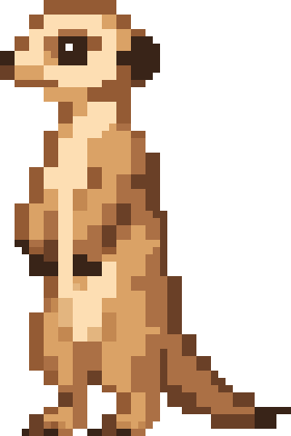

Soluciones agénticas
Agentes que usan herramientas, consultan datos internos y colaboran entre sí, con cada acción registrada y bajo políticas que tú defines.
Laboratorio de IA · on-premise · código abierto
onpremIA Labs diseña y desarrolla soluciones agénticas e inteligentes que se ejecutan en tu propia infraestructura, y libera como código abierto las herramientas para auditarlas, operarlas y aprender con ellas.
Construimos IA gobernable
01 · El laboratorio
Investigamos, prototipamos y llevamos a producción sistemas inteligentes pensados para ejecutarse fuera de la nube: en servidores propios, estaciones con GPU y dispositivos en el borde. Lo que construimos para nosotros lo publicamos para la comunidad.
Agentes que usan herramientas, consultan datos internos y colaboran entre sí, con cada acción registrada y bajo políticas que tú defines.
Modelos de lenguaje, visión y voz cuantizados y desplegados en tu hardware, incluso sin conexión a internet.
Medimos cómo se comportan modelos, agentes y sistemas completos, y lo convertimos en certificados firmados que cualquiera puede verificar.
Plataformas que acercan la formación al trabajo real, porque la tecnología solo es soberana si hay personas capaces de operarla.
02 · Valores
Cada valor se traduce en una decisión de ingeniería concreta. Selecciona uno para ver cómo lo aplicamos.
Gobernar un sistema inteligente es poder responder quién hizo qué, con qué autorización y contra qué umbral. Por eso los umbrales los fija siempre quien opera el sistema, nunca la herramienta.
La soberanía es poder ejecutar, auditar y actualizar tu IA sin pedir permiso a un tercero ni enviarle tus datos. Diseñamos para entornos aislados de la red desde el primer día.
La evidencia que guardamos es la mínima necesaria: huellas criptográficas en lugar de contenido. Cada artefacto externo se fija por hash, y un cambio inesperado detiene el proceso.
Un resultado sin identidad no vale nada: hay que saber qué modelo, con qué cuantización, en qué motor y sobre qué hardware. Y qué agente actuó en nombre de quién.
Preferimos varias cifras honestas a una nota única que lo esconde todo. Sin puntuaciones agregadas, sin modelos que juzgan a otros modelos y con cada limitación escrita.
03 · Productos
Auditar lo que ya funciona, construir y desplegar lo que viene, y formar a quienes lo harán posible.
On-Prem AI Audit Suite
Audita modelos, agentes y sistemas completos que ya están en marcha y emite certificados firmados verificables sin conexión.
Ver detalle → En desarrolloIA multimodal local, no-code
Plataforma air-gapped y autosostenida para adaptar, orquestar, evaluar y desplegar IA multimodal en hardware propio y dispositivos edge.
Ver detalle → En desarrolloFormación profesional dual
Plataforma digital no-code que conecta el talento académico con el mundo laboral a través de programas duales.
Ver detalle →No hay productos en esta categoría.

Activo · Herramienta de código abierto
On-Prem AI Audit Suite
Evalúa un despliegue de IA que ya está funcionando, sin desplegar ni descargar el modelo, y convierte el resultado en un certificado digital firmado que un tercero puede verificar sin conexión.
benchCertifica un modelo en su despliegue real.discoverInventaría motores, agentes y herramientas.smithEscenarios con herramientas simuladas como verdad de base.swarmFlujos multiagente declarados frente a observados.sentinelProxy que observa y retiene acciones para un humano.inquestAuditoría posterior a partir de registros.auditEl sistema completo, con un único certificado.En desarrollo · Plataforma
No-code · low-code · air-gapped · autosostenida
Una plataforma para adaptar, orquestar, evaluar y desplegar inteligencia artificial multimodal de forma local, en hardware on-premise y dispositivos edge, sin depender de servicios externos para funcionar.
Evolve está en desarrollo activo. Publicaremos el repositorio cuando su primera versión sea utilizable.
En desarrollo · Plataforma educativa
Talento académico ⇄ mundo laboral
Una plataforma digital no-code que centraliza la formación profesional dual: une a centros educativos, empresas y estudiantes en un mismo lugar, desde el convenio hasta la evaluación final.
NexoDual está en desarrollo. Si representas a un centro educativo o a una empresa interesada en programas duales, nos encantará conversar.
Selecciona un actor para ver qué aporta y qué obtiene.
Convenios, planes formativos, seguimiento de prácticas y evaluación, compartidos por las tres partes sin papeleo disperso.
04 · Código abierto
Un certificado que solo su emisor puede comprobar no es un certificado. Por eso publicamos el código, la metodología y las decisiones —con lo que cada una cuesta— para que cualquiera pueda auditar al auditor.